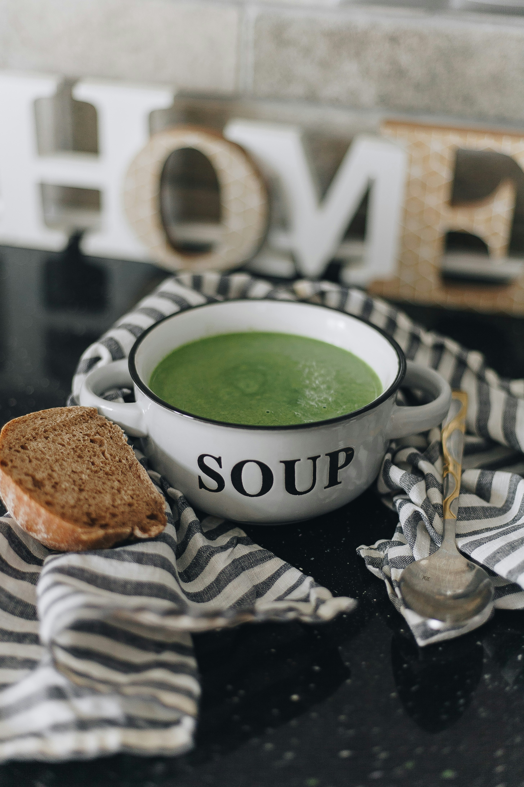

Broccoli Soup

Description
Vegan broccoli soup with cashews and yukon gold potatoes.
Ingredients for 4 persons. Finished in about 30 minutes.
Ingredients
- 1 cup raw cashews
- 5 cups vegetable broth, divided
- 2 Yukon Gold potatoes, cut into 1/2-inch cubes
- 1 cup raw cashews
- 1 onion, finely chopped
- 4 ½ cups coarsely chopped broccoli
- 1 teaspoon dried basil
- 1 teaspoon fine sea salt
- ¼ teaspoon freshly ground black pepper
Steps
- Blend cashews and 1 cup vegetable broth in a blender until smooth, about 1 minute.
- Pour the remaining 4 cups vegetable broth into a large pot; add potatoes and onion.
- Bring to a simmer, cover, and cook for 5 minutes.
- Stir in broccoli and basil; return to a simmer.
- Cover and cook until potatoes are tender, about 10 minutes.
- Stir cashew mixture into soup; add salt and black pepper.
- Bring to a simmer and immediately remove from heat.
- Transfer about half the soup to a blender; blend until smooth.
- Return blended soup to pot and stir well.
- Serve immediately.
Home